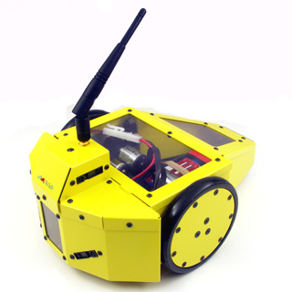
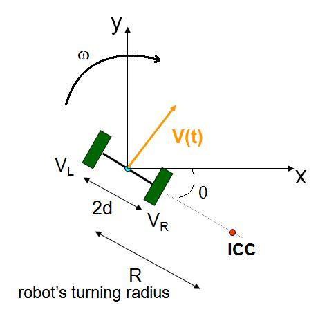
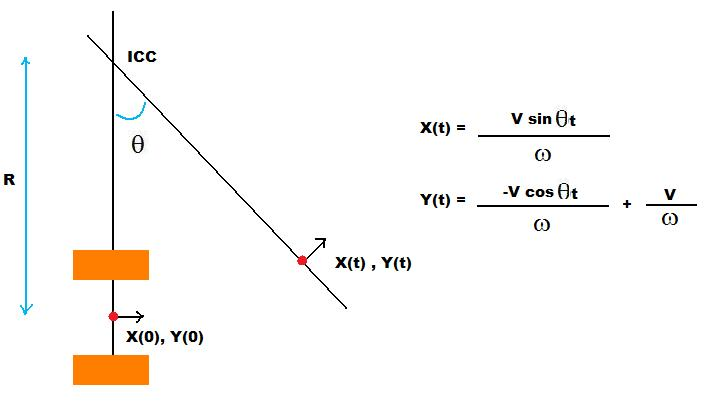
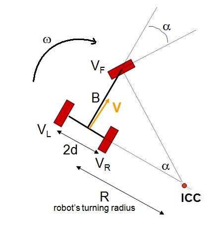
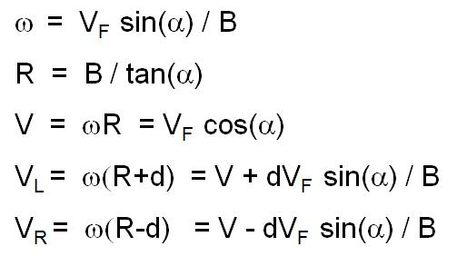
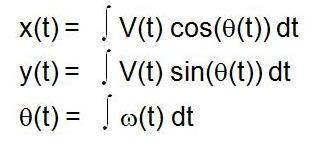

Computer Science & Engineering →Mobile Robotics →List Of Experiments
Forward Kinematics
What is a Differential drive robot?

Differential drive is the common drive mechanism used in mobile robots. It consists of 2 drive wheels mounted on a common axis, and each wheel can independently being driven either forward or back-ward.
Since each wheel is independent we can vary the velocity of each wheel, for the robot to perform rolling motion, the robot must rotate about a point that lies along their common left and right wheel axis.
This point about which the robot rotates about is known as the ICC - Instantaneous Center Of Curvature

By varying the velocities of the two wheels, we can vary the trajectories that the robot takes. Because the rate of rotation ω about the ICC must be the same for both wheels, we can write the following equations:

where 2d is the distance between the centers of the two wheels, VR, VL are the right and left wheel velocities along the ground, and R is the signed distance from the ICC to the midpoint between the wheels. At any instance in time we can solve for R and ω:


There are interesting cases with these kinds of drives.
- If VL=VR, then we have forward linear motion in a straight line. R becomes infinite, and there is effectively no rotation - ω is zero.
- If VL<VR, then R is finite and we have rotation about the point which is to the left of the left wheel along the axis.
- If VL>VR, then R is finite and we have rotation about the point which is to the right of the right wheel along the axis.
- If VL=-VR, then we have rotation about the midpoints ofthe wheels.

Derive forward kinematics for differential drive?
Assume that initial position of the robot is 0,0. When the wheels are given velocities say VL and VR respectively. The position of the robot after time t would be derived in the following way:
The equation of the resultant velocity of the point which is mid point of the axis connecting the wheels is calculated in the previous section.The x and y component of the resultant velocity is given by

Using these velocities, the equation to calculate the x,y position of the robot after time t is given by
The resultant path would be of a circle and the equation to get the position of the robot after integration is

What is Ackerman Steeting?
Ackerman steering is the type of steering found on most automobiles. In this model, the front steering wheels each rotate on seprate arms so as to able to rotate different amounts to point at ICC, which must lie on the line passing through a larger angle axis of the vehicle. In this VL we discuss about the tricycle steering model

Tricycle drive is the common case in the mobile robots. It consists of one steering front wheel and two rear wheels (free wheels). The robot motion is controlled by the steering wheel's velocity VF and the direction α.
These controls produce a ICC along the axis of the rear wheels as shown below.

The effect of these controls on the other parameters of the robot like VL, VR, ω are shown below.

Derive forward kinematics of a tricycle?
Assume that the initial position of the robot is (0,0). When the steering wheel is given a velocity of VF along the direction α, then the position of the robot after time t is derived in the following way.
The equation of the resultant velocity of the point which is mid point of the axis connecting the wheels is calculated in the previous section. The x and y component of the resultant velocity is given by
Using these velocities, the equation to calculate the x,y position of the robot after time t is given by

The resultant path would be of a circle and the equation to get the position of the robot after integration is